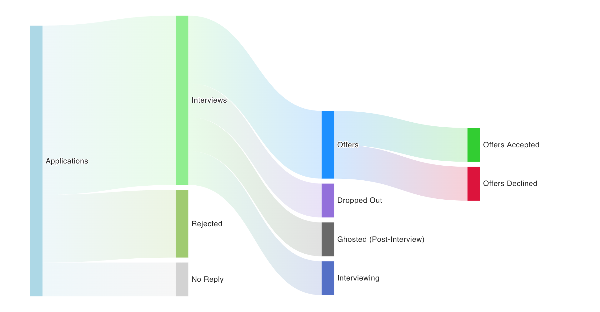

Introducing Jobcrawler
Introduction
I’ve been working on Jobcrawler (name pending – thinking of better ones!) for the past six months or so, and I’m proud of where it’s at and thought it might be a good time to share it with all of you (cough, potential beta users). This post will be a brief intro to what the app does, why I built it, and some roadmap items for the future. As a disclaimer: I’m still not an engineer (especially on the front end), so please don’t read through my largely GPT-generated React code with too critical of an eye.
What’s Jobcrawler?
Jobcrawler is an app that I started building when I was passively job hunting from about April until June. I had a problem that I didn’t know of a good solution to: I had a shortlist of companies I thought I might be interested in working for, and I found myself needing to repeatedly check their job boards very often to see if they posted a new job that matched my interests (mostly data science and ML engineering).
This was a painful, time-consuming, and, largely, easily automatable process. So I build Jobcrawler to automate it, by fetching new jobs from company boards each day and sending me an email containing ones that were relevant to me.
The app has evolved pretty significantly since then. Now, the app has a handful of core features:
- You can view the companies in its database and add new ones that you’re interested in. In many (most?) cases, the app will automatically determine how to collect jobs from a company’s board just based on the company’s website and the name, but in some cases it might request more information.
- You can set up email and search preferences, which will let you filter jobs to relevant ones for you, and will trigger emails to be sent to you when a company you’re interested in posts a job that matches your search query.
- You can peruse the job boards of all companies in the database or of a single company and filter for postings matching your interests. You can also filter by only postings posted in the past day, three days, week, etc.
- You can get job recommendations for new jobs you might not have seen yet that match your interests.
- You can keep track of your search by keeping track of which jobs you’ve applied to, which you’ve gotten interviews at, etc. and view some analytics on your search (such as that famous job search Sankey diagram that’s always on Reddit). 
Why Should I Use It?
Basically for the reason it says on the tin: It’s a no-bullshit job searching app. I hate LinkedIn, and I largely built this so I could stay off of LinkedIn and sites like it. On Jobcrawler, there aren’t any ads, there’s no recruiter spam, there aren’t any stale postings that aren’t actually open anymore. It just works directly with company job boards and gets rid of the intermediary.
It’s also free, and I’m not going to spam you about paying for an account (at least until my hosting costs are higher than the $30 / month that they are now), I’m not going to sell your data, I’m not going to promote jobs from companies that are paying me so it’s impossible to find anything else, and so on.
And most importantly: I think it’ll make your job search easier and more delightful! It did for me. I’ve found that the tooling that’s available for job searching needs quite the refresh, so this app (which is very much a work in progress!) has been my attempt at filling in some of the holes there. I’ve basically built something that I wanted when I was job hunting because I found it useful, and I hope others will too!
Roadmap
I have a bunch of ideas for some future things to build, to improve, etc. In no particular order, some things I’ll be working on in the future include:
- Expanding the database of companies and postings. Right now, there are about 550 companies and >12,000 postings.
- Adding more analytics.
- Adding some cover letter and resume assistant functionality to help you write and edit your cover letters and resume, maybe powered by GPT.
- A whole bunch of miscellaneous improvements to the codebase to improve the UX of the app.
- Design improvements!
Wrapping Up
If there are any VCs reading this who think “Wow, this is an amazing start up idea!” or any designers or frond-end engineers who like the idea and want to help out, please reach out to me 😉.
But in all seriousness: I hope someone comes across this post and finds something here useful, and I’d love to hear any feedback from anyone who’s tried the app!